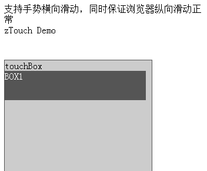
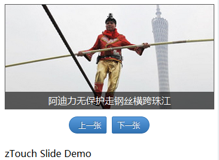
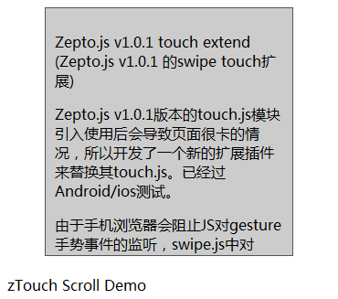
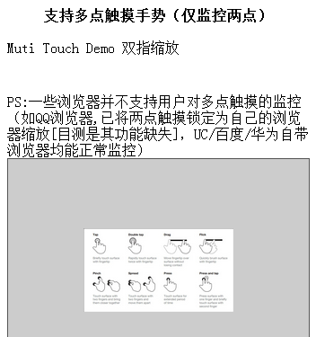
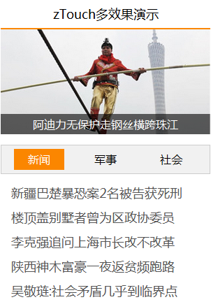

# zTouch #
* Zepto.js v1.0.1版本的touch.js模块引入使用后会导致页面很卡的情况，所以开发了一个新的扩展插件来替换其touch.js。已经过Android/ios测试。
* zTouch.js支持手势横向滑动，同时保证浏览器纵向滑动正常
* zTouch.js支持多点触摸监控
zTouch演示
(点击图片进入示例)
演示一：Basic demo(基本用法演示)

演示二：Slide demo(幻灯片切换演示)

演示三：Scroll demo(滑动演示)

演示四：MultiTouch demo(两点触摸缩放演示)

演示五：Rich demo(综合演示)

Copyright Baiwand